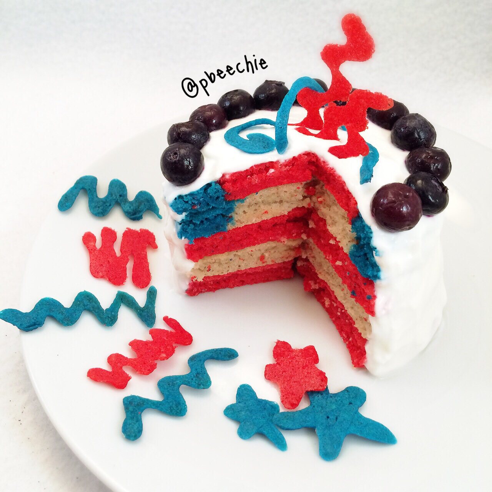

July 4th Pancakes
Too soon or nah? Never, if you ask me ;p. Yesterday I made 4th of July themed protein pancakes, just in time for the US vs Portugal World Cup game (absolutely unintentional, but we'll pretend I knew what I was doing). I wish I was into soccer more than I am. I never paid much attention to the World Cup, but this year I've been trying to follow more closely and finally understand how the rounds work. It's going well I'd say, maybe, idk. What I doooo know is these pancakes were amazing and fun to make :) I feel like this would be a great surprise for a child's breakfast (or just easily amused adults like myself). Expect more 4th of July themed things in the upcoming week because fun. 
- 1.5 servings Sweet Vanilla Pancake recipe
- Red food coloring
- Blue food coloring
Toppings
- Plain greek yogurt
- 1/2 tsp vanilla extract
- 1-2 stevia packets
- handful of blueberries
First, make the pancake batter. I just multiplied the ingredients in my sweet vanilla pancake recipe to make 1.5 of it. Then, divide the batter into 3 bowls, to where one bowl is approximately 1/5 of the batter, one bowl is 2/5, and the other bowl is 2/5. To the bowl of 1/5 batter (the smallest amount), add 3-5 drops blue food coloring until you obtain the color you want. To ONE of the other bowls, add 4-6 drops red food coloring until you obtain the color you want. Leave the last bowl as is (white). Now you should have equal parts red batter and white batter, and you also have some blue batter in a lesser amount.
Overall, to make the flag design, you need 5 pancakes. First, spray a large pan lightly with nonstick spray (don't use too much or else it will alter the color of the pancakes). Turn your pan to a LOW heat, and form 2 equally sized red pancakes. Watch close so that they don't brown too much and change colors. Once cooked on one side, flip, and cook until no longer doughy. Keep it on a low heat the whole time and watch close. Then, cook 1 white pancake in the same manner.
You now have 3 of your 5 layers. For the last two layers, you need 1) a white pancake with a blue outer circle and 2) a red pancake an equally-sized blue outer circle. Make sure your heat is off. Lightly spray the pan with nonstick spray, removing any excess. While the heat is off, form your 2 last pancakes. This gives you time to correct the form if you mess up. Once you have the desired design/shape, cook on a low heat in the same manner you did with pancakes 1-3.Once cooked, layer your 5 pancakes! Red, white, red, white with blue outer circle, red with blue outer circle.I had some extra batter to use, so I made fun designs in the pan while the heat was turned down to the lowest it could. Since they are so thin, they don't need much heat to cook. I did swirls, zig zags, stars, etc to use as decoration on top!
To ice the entire stack, I mixed plain greek yogurt, ~1/2 tsp vanilla extract, and 1-2 stevia packets. I didn't measure anything, I just used enough of that until the pancakes were fully iced. I also decorated the rim of the pancake "cake" with blueberries. Then just cut the cake and enjoy! Try not to cry as the masterpiece disappears before your eyes.